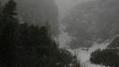
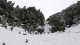

Horcový lezecký rok 2018
Horcový lezecký rok 2018
Veru tak, inak ani nemôžem nazvať tento článok, ale v týchto riadkoch bude skôr sumár 2018 ako dôkaz toho, že sme niečo málo aj liezli ako spomienky na nejaké perličky, lebo perličky mi už po tak dlhej dobe výfukalo z mojej deravej hlavy J
Pravda je taká, že tento rok bol poznamenaný predovšetkým zraneniami a celkovou vyťaženosťou klubistov, z toho dôvodu by som kľudne vyhlásil tento rok za docela slaby. V prvom rade bol a je stále najviac pokazený Horár s jeho kolenami(to má z toho života aký vedie a s kým sa stýka J, začiatkom roka postihol prúser s rebrami aj Predsedu – zase raz machroval v uliciach Smokovca a nevyšiel mu krok. Naš český klubový klenot - Candát na to hodil celoročného bobka (až na dve akcie), lebo sú že vraj aj dôležitejšie veci ako lezení. (ale otáčet se celý muže). No a to je čo sa týka aktívnych členov všetko. Potom ešte ja. A mne nezostalo nič iné ako si postupne z tohto obmedzeného výberu tasiť vždy toho alpinistu, ktorý práve mohol. Alebo žiadneho...
Zima sa začala pred Silvestrom vo Veľkej studenej doline vo vynikajúcej zostave Predseda, Horár a ja. Išli sme do východných svahov Slávkaču, tam je na úvod sezóny takmer vždy záruka ľadových podmienok. Ale to už boli moji klubisti v značnom rozklade, keďže si docela jasno pamätám,že ma zneužili ako mladého pakistánskeho chlapca a drbli mi do batohu všetko. – laná 2x60m aj matroš.Preto ich mám rád, lebo sa starajú o moj neustály rast fyzickej kondície. Ale veď to bol len kúsek v Štrbavom hrebeni Popoluška. http://www.tatry.nfo.sk/lady.php?lad=5:Veľká-Studená-dolina:38c: Oni dvaja boli v takom zúboženom stave, že obaja horskí predátori sa podopierali paličkami J. To cesta na Hřebínek cez bufet na Biličke bola už o inom, tušim som ich učil stojky na hlave alebo také čosi J.
Jááj skoro by som zabudol. Po Troch kráľoch som tasil Candáta. Tak sme išli do Šaša http://www.tatry.nfo.sk/lady.php?lad=5:Veľká-Studená-dolina:39c: vo výborných podmienkach, noc na Zbojníčke (sami dvaja na chate a kopec zábavy vďaka bilinkovému čaju) a na druhý deň sme chceli zaliezť v Slavkovskej kope niečo, ale nejako som sa necítil zdravotne fit, tak sme cestou preliezli len taký kúsok ľadu čo sme tam nikdy pred tým nevideli a nazvali sme ho DNA J. Celkom pekný kúsok.




Potom prišlo solo obdobie. Mi bolo docela blbé sedieť doma ked som sa cítil celkom dobre, veď oni traja boli out. Nie ja. Tak som som vyrážal na občasné prechádzky po okolí a spoliehal sa na to, že vždy tam nájdem nejakých alpinistov a k nim sa pridám. Alebo ma odistia. Alebo neodistia.Takto som sa zastavil Na zákrute Trenažér pravú vetvu solo, ľavú http://www.tatry.nfo.sk/lady.php?lad=4:Malá-Studená-dolina:31: ma odistil maďar, DNA –solo, Ľad v Lomníckom hrebeni solo http://www.tatry.nfo.sk/lady.php?lad=4:Malá-Studená-dolina:30c:. Na jeden den sa vyskytol aj ubolený predseda tak sme šli opäť Na zákrutu a do Uhoľných prázdin.


Pomaly sa blížila Veľká noc, ostával posledný víkend a zimu sme ukončili ako sme aj začala v trojici. Predseda, Horár a ja. Samozrejme podmienkou bol krátky nástup. To sme boli len toť za Hrebienkom vľavo v tých svahoch, kratučký nástup, ale celkom slušné dve dĺžky, prvá mix a druhá čistý lad cca za 3, povedal by som tak, že zaujímavé a celkom do kopca.


Po tomto výlete som sa takmer okamžite presunul do Viedne na letisko a preletel som v čase a priestore do Nepálu. Odsprievodcovať trek pod Everest s výstupom na Island peak s mojou domovskou CK Sancho https://www.sanchotour.sk/expedicia-everest-base-camp-island-peak-6189m-nepal-10-04-2013-30-04-2012/


Mojich chlapcov klubových som nechal v štichu s vedomím, že veď oni si poradia. No ani moc nemuseli, lebo hned po tom ako sa zdvihlo lietadlo airbus A380 smer Dubaj priletelo na Slovensko takmer letné počko a z ďalšieho pôsobenia v zimných Tatrách nebolo vôbec nič. To som videl hned začiatkom mája na obnažených tatranských končiaroch bez snehu.. Toto teplé, takmer letné počasie chlapci využili na lezenie v Hollentale a keď som si trošku oddýchol z výletu, bol som aj ja s nimi na jednom tripe v Raxe. Ale čo presne sme liezli, to ani srnka netuší.
To už prišlo tak dlho neočakávané aj kalendárne leto a s ním aj extrémna záhradkárska úroda čo pre lezenie vôbec nebolo dobré. To sme sa hrbili na záhradách a lezenie muselo ísť bokom. Až na víkend, kedy sme sa stretli dve dvojky v Lesnej, po tom čo naša dvojka (Candát a ja) sa vyhrievala na Batizákoch v Kuttových platniach http://www.tatry.nfo.sk/cesta.php?obr=stity//0037//00370703.p a dvojka Predseda+Horár mokla vo Velickej doline v Granátovej stene http://www.tatry.nfo.sk/cesta.php?obr=stity//0186//01860801.p. Stretnutie po dlhšom čase komletného klubu dopadlo úplne podľa kurzu v stávkových kanceláriach 100:1 na nás. JJJJ HAV HAV JJ. Potom sme sa v pokore nám vlastnou zase všetci vrátili hrbiť sa na tie záhrady a k rozrobeným domom a k podobným nudným huncútstvam. To ale už predsedovi mutil rozum jeho výlet na Ural s pracovným názvom„expediícia za Ural“ J. Veď keď bude chcieť, tak sa všetkým sám vyjadrí, čo to bolo za úlet a z čoho jedol guláš J.


V tej dobe sme už s Horárom mobilizovali sily na výlet do Tatier. To už bola tušim polovica septembra. A nakoniec sme ich aj zmobilizovali. Tie sily teda. Horárová podmienka, vzhľadom na stav jeho kolien, bola krátky nástup. Nuž ok, tak sme sa vybrali na Streleckú vežu na pravý piler, Ľavý sme už kedysi išli aj s Predsedom http://www.tatry.nfo.sk/cesta.php?obr=stity//0834//08340705.p lezenie bolo v pohodičke, trochu vlhko, asi som očakával krajšie niečo, ale tak stienka v hornej časti bola fajna. Po dolezení dole, ale žádne také, že pivo na Zbojníčke - pekne ako športovci Generálom dole. Večer sme chvílu kolibovali, ale nie dlho. Ráno sa nám zdôverili naše končatiny, že by neradi merali cestu do veľkých kopcov J, tak sme počas raňajok hľadali alternatívu. A našli sme ju. Machnatô v Demänovskej doline, teda Horár našiel. Tak sme zbalili BC a zašli sme tam. Bol krásny, slnečný, pracovný pondelok a o to krajší, že som nebol v robote, ale na parádnych skalkách v prírode. Musím pochváliť miestnych lezcov, pekne sa o to starajú, len čo je pravda. Až na tie hučiace tatrovky v doline, čo zvelaďujú náš NAPANT. Ale zato lezecká komunita nemôže, to je iná komunita.... Krásne dva dni.
Následne asi o týždeň sme zašli s Horárom do Hollental, celé leto mi piloval ušiská s jednou cestou, ktorú „musíme preliezť“, vieš krátky nástup. https://www.bergsteigen.com/touren/klettern/bergsteigerwand-kamine/ A majster mal pravdu, pekné to bolo, aj ma po dolezení do cechu kominárov prijal J. Celú cestu sme zlanili pod nástup, tak to bolo trošku aj spestrené, ale bez problémov. V celej doline Gaislochu žiadny lezci, iba jeden zamestnanec si plnil pick-up fajnými trieskami.. pohodičkaaa.


Zatiaľ posledný tohtoročný výlet bol posledný víkend – t.z. v polovici októbra. Žiaľ moje výlety sa striktne obmedzili len na víkedny, keďže mi niekto minul dovolenku a mne svieti v počte dovolenkových dní na svetelnej pracovnej tabuli obrovska 0. Nula celá nula dní písanou formou J. Škoda, lebo by sa dalo v Tatroch ledacos poriešiť v tomto krásnom babskom lete. A ja neborák musím sedet v robote a makať ako bledá tvár. Odporné,neprípustné. Aháá chcel som o tom výlete písať. Boli sme s predsedom v Tatrách na Bradavici cez Zvodnú lávku. http://www.goat.cz/index.php?path=VysokeTatry_Vrcholy_Bradavica_BradavicaVystupy, také light, ale sme si povedali, že Bradavicu musíme mať skrátka odháčknutú J. Moc hezký spomínky budu mít


To by bolo zatiaľ odo mňa z Horcového štúdia všetko. Dúfam doplníme tento rok ešte aspoň nejakou rakúskou skalkou lebo do Tatier zrejme už čoskoro zavíta zima.
Ivík môj
Pôvodná stránka: archív horecsport.sk